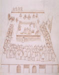

Robert Beale
Drawing of the execution of Mary Queen of Scots (1587)
By permission of the British Library (MS Additional 48027, fol. 650*)
View close-up
This eyewitness drawing shows the execution of Mary Queen of Scots as a sequence of events. At upper left, Mary enters, followed by her ladies in waiting. In the center, her ladies help her prepare. At the upper right of the scaffold, the executioner strikes off her head. The figures numbered 3 and 4 in the drawing are the official witnesses, the Earls of Shrewsbury and Kent. Other spectators crowd around on all sides to view the bloody and historic event.
Image copyright of the British Library and further reproduction is prohibited
Return to The Execution of Mary Queen of Scots
|